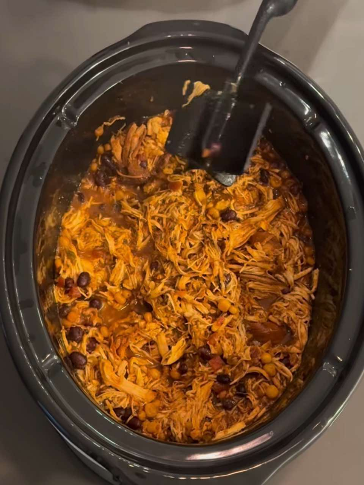

Crockpot BBQ Chicken & Beans
CrockpotChicken
Servings4 servings
PrepPT0S
CookPT0S

Ingredients
- 2 lb chicken breast
- ¾ cup low-sugar BBQ sauce
- 3 tbsp chicken broth
- ½ tbsp apple cider vinegar
- ½ tbsp Worcestershire
- 1 tsp smoked paprika
- 1 tsp garlic powder
- ¾ tsp onion powder
- ¾ tsp salt
- ¾ tsp black pepper
- ½ tsp chili powder
- ¼ tsp cayenne (optional)
- ½ onion
- ¾ bell pepper
- ½ tomato
- 8 oz black beans
- ½ cup corn
Directions
- Put all ingredients in a ziplock bag
- Mix it marinate over night
- Empty into crockpot
- Cook on high for 3-4 hours or high 6-7 hours
- Shred chicken
- Serve with carb or veggie of your choice
This page includes Schema.org Recipe structured data for recipe importers.